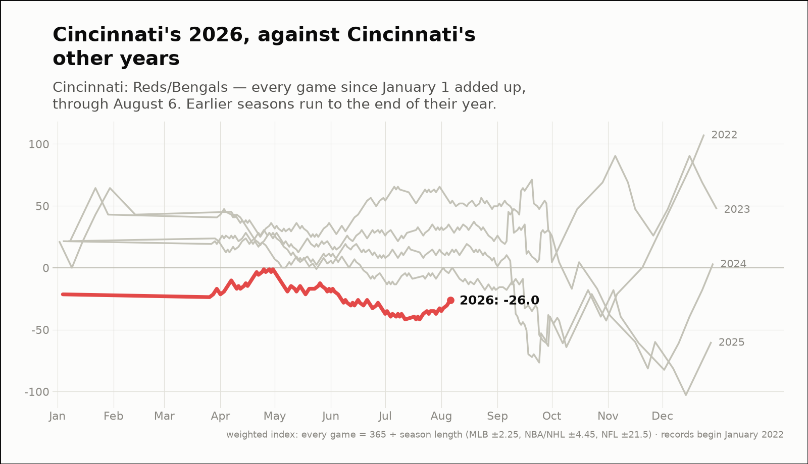
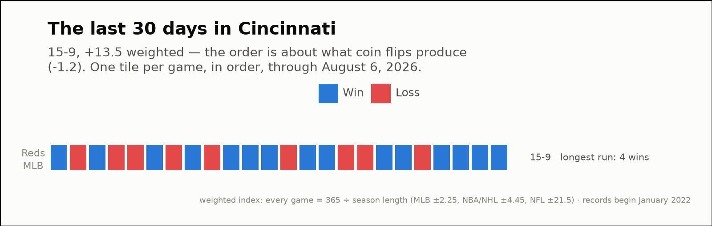

City of the day — Cincinnati
Cincinnati: Reds/Bengals
- 2026 so far
- 56-59, -26.0 weighted over 115 games; longest run 8 straight losses
- Order of results
- about as clumped as coin flips (+0.1)
- Earlier seasons (full-year weighted)
- 2022 +107.6, 2023 +47.4, 2024 +3.4, 2025 -59.9
- Last 30 days
- 15-9, +13.5 weighted; longest run 4 straight wins
- Window opens
- July 8, 2026
| Team | Last 30 days | Weighted | Longest run |
|---|---|---|---|
| Reds | 15-9 | +13.5 | 4 straight wins |

